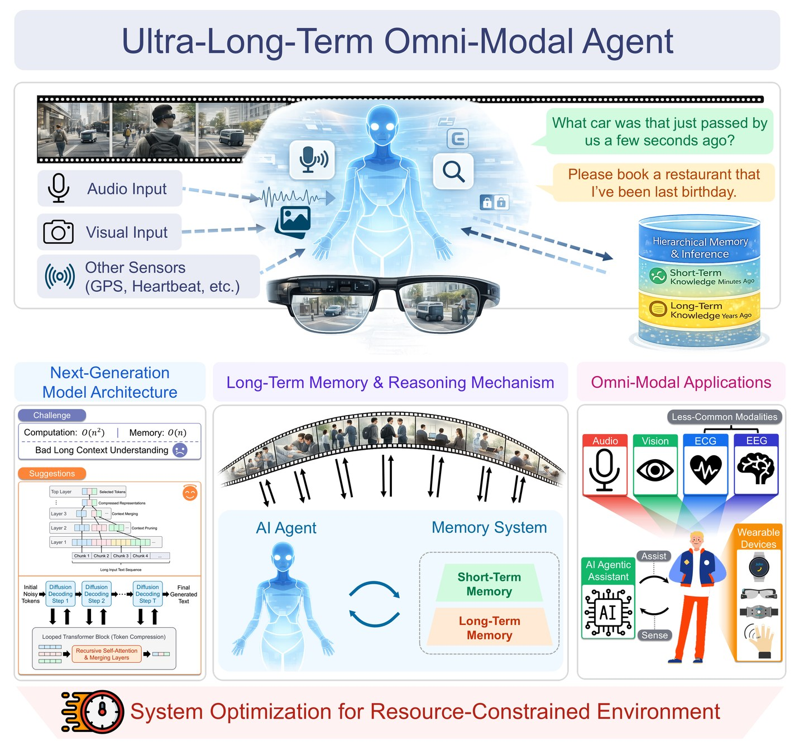

차세대 옴니모달 에이전트를 위한
초장기 계층형 기억·추론 아키텍처
비디오·오디오·텍스트·생체 신호를 실시간으로 이해하고, 시간이 흐르며 쌓이는 방대한 경험 정보를 계층적으로 압축·저장·회상하는 초장기 옴니모달 에이전트(Ultra-Long-Term Omnimodal Agent)의 기반 기술을 개발합니다. 연구 결과물은 공개 SW와 벤치마크로 배포합니다.

과제 개요
- 과제명
- 차세대 옴니모달 에이전트를 위한 초장기 계층형 기억·추론 아키텍처
Ultra-Long-Term Hierarchical Memory and Reasoning Architecture for Next-Generation Omnimodal Agents - 과제번호
- RS-2026-25524173
- 사업명
- 경량·저전력AI 한계극복기술개발 (과학기술정보통신부 · 정보통신기획평가원)
- 연구기간
- 2026. 04. 01 – 2030. 12. 31 (4년 9개월, 2단계)
- 주관연구개발기관
- 서울대학교 산학협력단 (연구책임자 송현오)
- 공동연구개발기관
- 포항공과대학교 산학협력단, ㈜노타
- 협력기관
- ㈜퓨리오사에이아이
연구 내용
- 초장기 기억 및 추론
- 위치에 의존하지 않는 KV 캐시 모듈화로 과거 문맥을 재사용하고, 중요도와 재사용 빈도에 따라 기억을 계층적으로 저장·갱신합니다.
- 차세대 모델 아키텍처
- 트랜스포머와 상태공간모델을 결합한 Hybrid 구조, 그리고 입력 난이도에 따라 반복 횟수를 조절하는 Looped 트랜스포머를 설계합니다.
- 옴니모달 에이전트 응용
- 뇌 신호·심박 등 비주류 모달리티까지 이산 토큰으로 통합하고, 웨어러블 시나리오에 맞춘 Ego-Centric Assistant를 실증합니다.